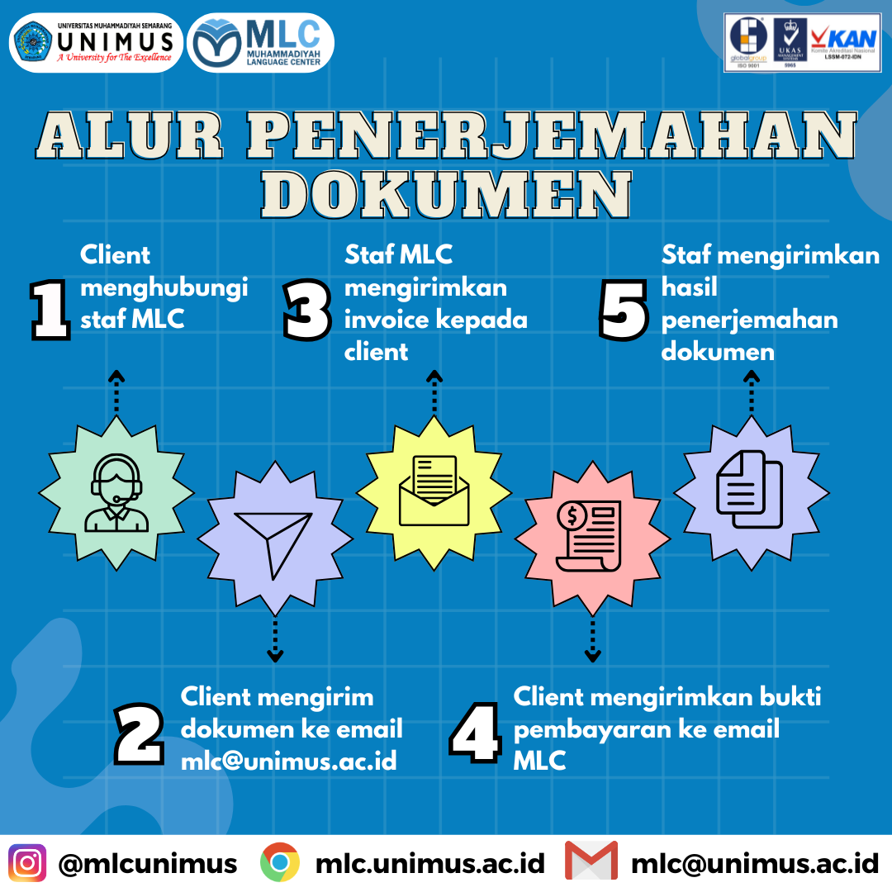

Translation & Proofreading
MLC UNIMUS menyediakan layanan translation dan proofreading untuk kebutuhan akademik, institusi, administrasi kampus, publikasi ilmiah, serta dokumen pendukung lainnya. Layanan ini mencakup penerjemahan dokumen legal, abstrak, artikel, serta proofreading abstrak dengan proses asesmen naskah terlebih dahulu sebelum pengerjaan.
Penerjemahan dan koreksi naskah akademik dengan asesmen awal oleh tim MLC.
Dokumen legal, abstrak, artikel, dan proofreading abstrak.
Biaya dan estimasi waktu disampaikan setelah asesmen naskah.

Daftar Biaya Layanan Translation
Tarif berikut berlaku per lembar berdasarkan hasil asesmen naskah oleh tim MLC UNIMUS.
| No. | Jenis Layanan | Estimasi | UNIMUS | UMUM |
|---|---|---|---|---|
| 1 | Penerjemahan Dokumen Legal | — | Rp60.000/lembar | Rp70.000/lembar |
| 2 | Penerjemahan Abstrak | 4–5 hari | Rp45.000/lembar | Rp60.000/lembar |
| 3 | Proofreading Abstrak | — | Rp35.000/lembar | Rp45.000/lembar |
| 4 | Penerjemahan Artikel | 5–7 hari | Rp45.000/lembar | Rp55.000/lembar |
Catatan biaya:
- Kategori UNIMUS berlaku untuk sivitas UNIMUS; kategori UMUM berlaku untuk pihak luar UNIMUS.
- Biaya dihitung per lembar berdasarkan hasil asesmen naskah oleh tim MLC.
- Permintaan pengerjaan cepat/kilat 1–3 hari dapat diajukan secara khusus. Biaya percepatan tidak dicantumkan sebagai tarif tetap pada daftar biaya, tetapi dihitung dan diinformasikan oleh MLC melalui quotation berdasarkan hasil asesmen naskah, panjang naskah, tingkat kesulitan, dan ketersediaan penerjemah.
Ketentuan Format Naskah yang Dikirim
Pastikan naskah memenuhi format berikut agar proses asesmen berjalan lancar.
Naskah disarankan dikirim dalam format Microsoft Word (.doc/.docx) agar proses asesmen dan pengerjaan lebih mudah.
Ringkasan Alur Pengajuan
Enam langkah singkat dari pengiriman naskah hingga penerimaan hasil.
Konfirmasi
Hubungi WhatsApp MLC
Asesmen
Tim MLC mengecek naskah
Quotation
Biaya dan estimasi disampaikan
Pembayaran
Proses dimulai setelah pembayaran terkonfirmasi
Hasil
Dikirim file Track Changes dan file final
Prosedur Pengajuan Layanan
Tahapan resmi pengajuan layanan translation dan proofreading di MLC UNIMUS.
- Kirim naskah/paper terlebih dahulu melalui email MLC UNIMUS: mlc@unimus.ac.id.
- Setelah mengirim email, lakukan konfirmasi melalui WhatsApp MLC: 0895-3263-63536.
- Tim MLC melakukan asesmen naskah, meliputi jenis layanan, jumlah halaman/lembar yang dihitung, tingkat kesulitan, dan estimasi pengerjaan.
- Berdasarkan hasil asesmen, MLC memberikan quotation atau penawaran biaya layanan kepada Bapak/Ibu.
- Jika quotation disetujui, Bapak/Ibu dapat melakukan pembayaran/transfer sesuai nominal yang diinformasikan.
- Setelah pembayaran terkonfirmasi, MLC memproses naskah sesuai jenis layanan, jumlah halaman, dan estimasi waktu yang disepakati.
- Apabila memerlukan pengerjaan cepat/kilat 1–3 hari, Bapak/Ibu dapat menyampaikan permintaan tersebut sejak awal. Biaya percepatan akan dihitung terpisah dan diinformasikan melalui quotation MLC berdasarkan hasil asesmen naskah.
- Setelah selesai, MLC mengirimkan dua file hasil translation: file Track Changes/perubahan dan file final tanpa penanda revisi.
- Bapak/Ibu dapat mengecek hasil translation secara detail dan mendiskusikan kembali apabila ada bagian yang perlu diklarifikasi.
- Revisi tidak dikenakan biaya tambahan selama tidak menambahkan kalimat atau substansi baru. Jika ada penambahan kalimat, biaya hanya dikenakan pada bagian tambahan tersebut.
- Referensi, tabel, nama penulis, dan institusi penulis tidak dihitung sebagai bagian isi terjemahan. Draft dapat dikirim terlebih dahulu untuk dihitung oleh tim MLC.
- Jika Bapak/Ibu tidak menyetujui quotation yang diberikan, MLC tidak akan memanfaatkan, menyebarkan, atau menggunakan data apa pun dari naskah/paper tersebut.
Catatan Layanan
Quotation Jelas
Biaya dan estimasi waktu disampaikan sebelum proses pengerjaan dimulai.
Kerahasiaan Naskah
MLC UNIMUS menjaga kerahasiaan naskah/paper dalam setiap proses layanan.
Permintaan Khusus
Gaya bahasa, terminologi, atau target jurnal dapat disampaikan sejak awal pengajuan.
Revisi Hasil
Revisi gratis selama tidak ada tambahan kalimat atau substansi baru.
Ajukan Layanan Translation
Kirim naskah melalui email MLC UNIMUS, kemudian lakukan konfirmasi melalui WhatsApp agar tim MLC dapat melakukan asesmen dan memberikan quotation layanan.